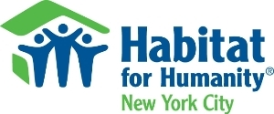

Here you can find listings of peak volunteering opportunities in New York City
We Speak NYC
In person: WSNYC has engaged with 200+ partner sites and trained 700+ volunteers. These volunteers have facilitated over 750 in-person conversation classes for a total of 24.5K hours of community service and impacting over 15,000 learners. Online: Having trained over 300 online volunteers, contributing more than 6,000 hours of community service, WSNYC has impacted 5,000+ unique learners since the onset of our remote classes. WSNYC has been able to reach learners from locations all across New York City and around the world.
America Needs You
.webp)
America Needs You aims to build a movement of like-minded individuals who believe that one day there will be no barriers to economic mobility for students with ambition and ability. By mobilizing volunteers we will ensure that low-income and first-generation college students have the support, information and access necessary to realize their career aspirations.
Habitat for Humanity New York City and Westchester
Habitat for Humanity New York City and Westchester is the largest builder of Habitat homes in the Northeast. We have built more than 380 homes in New York City, and more than 5,000 volunteers build with us each year. Habitat for Humanity's first project in New York City began in 1984 with Jimmy Carter's visit to the Lower East Side. We now build in the Bronx, Staten Island, Brooklyn, Manhattan and Queens.
Social Skills
Volunteering is a great way of obtaining social skills.